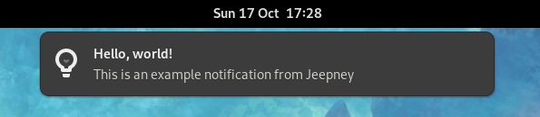

What is D-Bus?
D-Bus is a system for programs on the same computer to communicate. It’s used primarily on Linux, to interact with various parts of the operating system.
For example, take desktop notifications - the alerts that appear to tell you about things like new chat messages.

A desktop notification on GNOME
A program that wants to display a notification sends a D-Bus message to the ‘notification server’, which displays an alert for a brief time and then hides it again. Different desktops, like GNOME and KDE, have different notification servers, but they handle the same messages (defined in the desktop notification spec), so programs don’t need to do different things for different desktops.
Other things that use D-Bus include:
Retrieving passwords from the desktop’s ‘keyring’
Disabling the screensaver while playing a film
Special keyboard keys, like pause & skip track, working with whichever media player you use.
Opening a user’s files in a sandboxed (Flatpak) application.
Methods & signals
D-Bus uses two types of messaging:
Method calls go to a specific destination, which replies with either a ‘method return’ or an error message. In the notifications example above, the program sends a method call message to the notification server to ask it to display a notification.
Signals are sent out to any program that subscribes to them. For example, when a desktop notification is closed, the notification server sends a signal. The application might use this to choose between updating the notification (’2 new messages’) or sending a new one. There’s no reply to a signal, and the sender doesn’t know if anything received it or not.
Names
There are a lot of names in D-Bus, and they can look quite similar.
For instance, displaying a desktop notification involves sending a message to
the bus name org.freedesktop.Notifications, for the object
/org/freedesktop/Notifications, with the interface
org.freedesktop.Notifications. What do those all mean?
The bus name (
.separated) is which program you’re talking to.The object name (
/separated) is which thing inside that program you want to use, e.g. which password in the keyring.The interface name (
.separated) is which set of methods and signals you are using. Most objects have one main interface plus a few standard ones for things like introspection (finding what methods are available).
Finally, a simple name like Notify or NotificationClosed identifies
which method is being called, or which signal is being sent, from a list for
that interface.
The bus, object and interface names are all based on reversed domain names.
The people who control https://freedesktop.org/ can define names starting
with org.freedesktop. (or /org/freedesktop/ for objects). There’s no way
to enforce this, but so long as everyone sticks to it, we don’t have to worry
about the same name being used for different things.
Message buses
Applications using D-Bus connect to a message bus, a small program which is always running. The bus takes care of delivering messages to other applications.
There are normally two buses you need to know about. Each logged-in user has their own session bus, handling things like desktop notifications (and the other examples above).
The system bus is shared for all users. In particular, requests sent via the system bus can do things that would otherwise require admin (sudo) access, like unmounting a USB stick or installing new packages. (How the system decides whether to allow these actions or not is a separate topic - look up ‘polkit’ if you want to know about that).
You can also talk to the message bus itself (using D-Bus messages, of course).
This is how you subscribe to signals, or claim a bus name so other programs can
send you method calls. The message bus has the name org.freedesktop.DBus.
Note
Programs can agree some other way to connect and send each other D-Bus messages without a message bus. This isn’t very common, though.
Special features
You can send a D-Bus message to a program that’s not even running, and the message bus will start it and then deliver the message. This feature (activation) means that programs don’t have to stay running just to reply to D-Bus method calls. A config file installed with the application defines its bus name and how to launch it.
Because D-Bus is designed to be used between programs on the same computer, it can do things that are impossible over the network. D-Bus messages can include ‘file descriptors’, handles for things like open files, pipes and sockets. This can be used to selectively give a program access to something that would normally be off limits. See Sending & receiving file descriptors for how to use this from Jeepney.